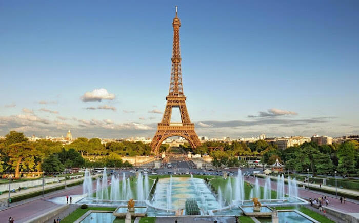
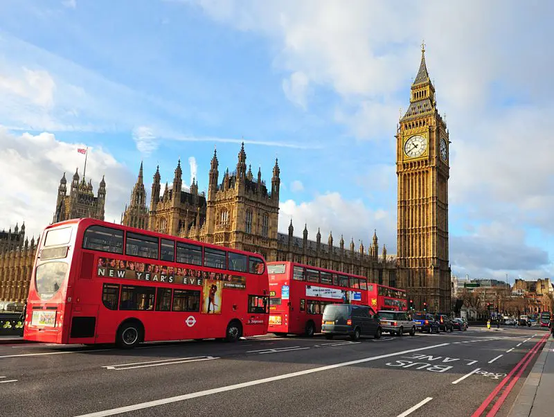
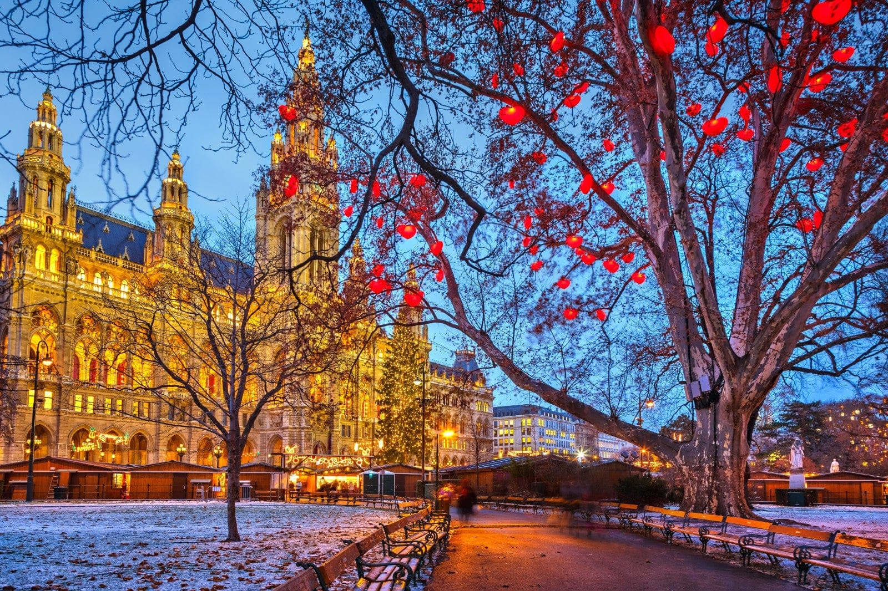

A Europa é um dos destinos mais procurados por turístas do mundo inteiro, sendo assim separei alguns pontos turístico famosos para serem apresentados no nosso site.
Como exemplo na França podemos citar dois incríveis pontos turísticos em Paris, a Torre Eiffel e o Museu do Louvre.
Na Itália temos diversas cidades turísticas, Como Roma, Veneza, Praga... O Coliseu e a Torre de Pisa são pontos turísticos famosos na Itália.

O Reino Unido também está nessa lista, e contamos com dois importants pontos turísticos em Londres, O Big Ben e a Ponte da Torre de Londres.
Na Grécia temos diversos sítios históricos e cidades que contam com uma paisagem ímpar, como a bela vista de Mykonos.
A Holanda ou Países baixos, localizada na Europa ocidental, é também conhecida por seus moinhos de vento e por seus imensos jardins de tulipas.

A Ástria está localizada na Europa Central, é um destino escolhido pelos amantes de arquitetura barroca, e simpatizantes da música clássica. A Catedral de Santo Estevão, fica em Viena, e é um ponto turístico bastante visitado.
